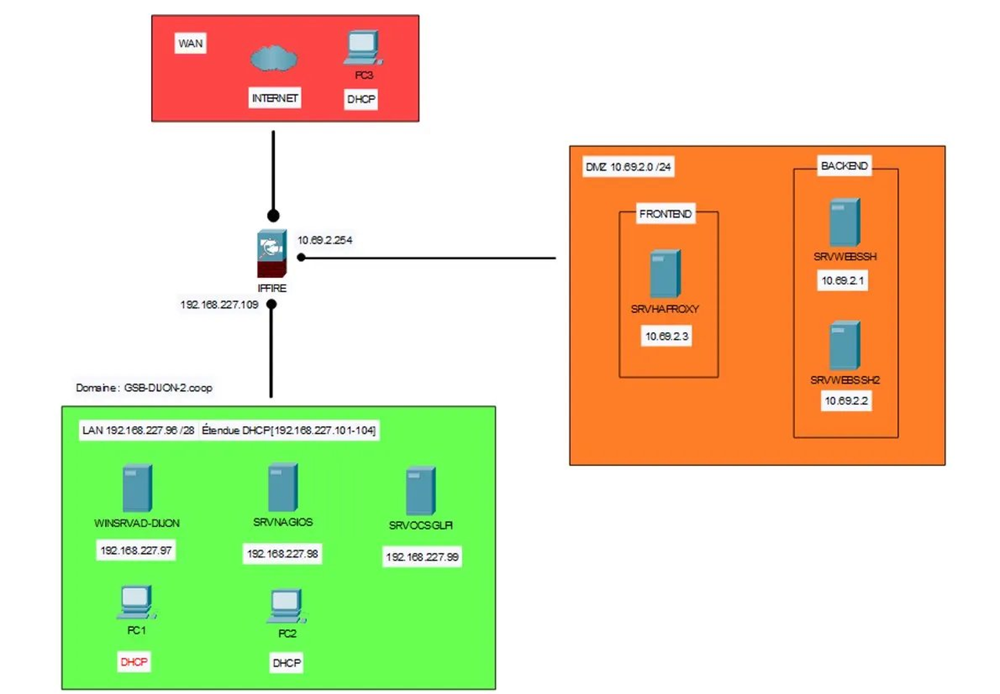
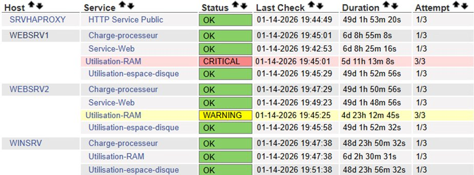

Projets
Ensemble des réalisations sur les deux années de BTS SIO SISR. Les 3 projets sélectionnés pour l'oral E6 sont présentés en détail.
🏭 Contexte GSB — Galaxy Swiss Bourdin
Le laboratoire pharmaceutique Galaxy Swiss Bourdin (GSB), issu de la fusion entre Galaxy et Swiss Bourdin, a pour projet d'implanter des agences dans 3 grandes villes françaises (Bordeaux, Dijon, Toulouse). Chaque agence dispose d'un réseau autonome géré par une équipe de techniciens. En tant que binôme CERTA Yohan & Noël Yanis, nous sommes responsables de l'agence GSB-DIJON-2 (domaine : GSB-DIJON-2.coop). Les projets labellisés AP GSB correspondent aux différentes missions réalisées sur cette infrastructure.

Première année — 2024/2025
Intégration à l'équipe support de Walden Digital, entreprise IT du groupe européen Walden (transport et logistique pharmaceutique : Movianto, ETP, Ciblex, Relais Colis…).
- Gestion de tickets via Zendesk : dépannage niveau 1, prise en main à distance (TeamViewer)
- Déploiement de postes HP Windows 11 : image système, LAPS, BitLocker, Active Directory, Malwarebytes
- Configuration de PDA (Zebra TC25, M3 Mobile) via SOTI MobiControl (MDM)
- Configuration d'imprimantes industrielles SATO (IP, liste de diffusion)
- Interventions sur sites Movianto (Sarlièves, Quantum, Siège)
- Supervision réseau avec Centreon
Mise en forme créative d'un document HTML fixe via CSS uniquement, sans modifier le HTML. Travail sur l'identité visuelle, la typographie et la mise en page.
Mise en place d'une infrastructure réseau pour l'entreprise TeckSio. Recensement des ressources, exploitation des référentiels, traitement des demandes réseau.
Conception et développement d'un site web statique HTML/CSS sur la thématique publicitaire. Travail en mode projet : planification, répartition des tâches, mise en ligne.
Deuxième année — 2025/2026
Lycée Sidoine Apollinaire — Déploiement de ~60 postes Windows 11 via FOG Project (PXE/Multicast) sur 3 salles informatiques (S-402, S-405, S-406). Binôme : Yanis Noël.
- Infrastructure réseau dédiée : serveur FOG (Debian, 192.168.10.12), DHCP Windows Server (options PXE 066/067), routeur Cisco
- Préparation du PC Master + Sysprep (OOBE/Généraliser) pour réinitialiser le SID
- Capture de l'image (~70 Go), tests Unicast, puis déploiement Multicast (~20 postes simultanés)
- Post-déploiement : intégration au domaine Active Directory du lycée
- Supervision des postes élèves avec Veyon et monitoring réseau avec Zabbix
Mise en place et administration complète du serveur Windows de l'agence GSB-DIJON-2.
- Contrôleur de domaine Active Directory (domaine GSB-DIJON-2.coop)
- Services DHCP (étendue 192.168.227.101–104) et DNS intégré AD
- Création d'UO, groupes, utilisateurs et GPO
- Dossiers partagés (repperso$, P_COMMUN, P_ECHANGE) et scripts NETLOGON
Mission 3 GSB : assurer la haute disponibilité du site web de l'agence en répartissant les requêtes HTTP entre deux serveurs Apache.
- Installation de HAProxy sur VM Debian dans la DMZ (SRVHAPROXY — 10.69.2.3)
- Frontend : écoute port 80, Backend : algorithme roundrobin 50/50 entre SRVWEBSSH et SRVWEBSSH2
- Résolution DNS via Dnsmasq : gsb-dijon-2-web.com → 10.69.2.3
- Tests de validation : alternance visible entre les deux serveurs à chaque requête
- Config avancée : pondération pour simuler un serveur moins puissant
Mission 4 GSB : déployer une solution de supervision pour surveiller en temps réel l'état de santé des serveurs de l'agence (CPU, RAM, disque, service web).
- Installation de Nagios sur VM Debian (192.168.227.98)
- Agents NRPE sur les hôtes Linux, NSClient++ sur Windows Server, ICMP (ping)
- 4 hôtes supervisés : SRVHAPROXY, SRVWEBSSH, SRVWEBSSH2, WINSRVAD-DIJON
- Seuils Warning / Critical configurés par indicateur — alertes en temps réel
Déploiement d'une solution ITSM complète pour la section BTS SIO du Lycée Sidoine Apollinaire.
- Stack LAMP (Debian 12) + GLPI 10.0.14 + plugin OCSNG 2.0.5
- OCS Inventory NG : agents sur postes Windows → remontée automatique du parc (matériel + logiciels)
- Entités : BTS SIO > Salles B-405, B-406, B-407
- Profils : Étudiant (ticket seul) / Enseignant (vue entité) / Technicien (gestion complète)
- Cycle de vie des tickets : Création → Attribution → En Attente → Résolution → Clôture
- Filtrage de contenu avec blacklist (Université de Toulouse) : drogue, malware, porn, social networks…
- Proxy transparent et suivi des logs de navigation
- Redirections NAT : RDP WAN → LAN, HTTP/SSH WAN → DMZ
- Mise en place de HSRP/VRRP : adresse IP virtuelle partagée entre routeurs pour la haute disponibilité
- Routage dynamique avec RIP et OSPF entre routeurs Cisco
- Création et configuration de VLANs avec routage inter-VLANs
- Spanning Tree Protocol (STP) pour éviter les boucles réseau
- EtherChannel (agrégation de liens) pour augmenter la bande passante entre switchs
Projets présentés à l'oral E6
Projet 1 / 3
Stage 1ère année ⭐ Oral E6Stage — Walden Digital
19 mai – 27 juin 2025 · Clermont-Ferrand · Tuteur : équipe support Walden Digital
Présentation de l'entreprise
Walden Digital est la branche IT du Walden Group, groupe européen spécialisé dans le transport et la logistique pharmaceutique. Le groupe comprend 5 entités : Movianto (logistique), Eurotranspharma (transport EU), Transpharma International (flux internationaux), Ciblex et Relais Colis. Walden Digital assure le support technique, la maintenance des infrastructures IT et le développement d'outils numériques pour l'ensemble du groupe depuis Clermont-Ferrand et Moussy-le-Neuf.
Organisation du service support
Le service support gère les incidents de niveau 1 via Zendesk (tickets). Les techniciens interviennent en télémaintenance (TeamViewer) ou sur site. Chaque technicien a une spécialité (réseau, mobilité, imprimante). Les procédures sont documentées sur Bizzmine. Réunion hebdomadaire de suivi chaque jeudi.
Missions réalisées
Déploiement de postes Windows 11
▾Déploiement de postes HP sous Windows 11 à partir d'une image système pré-configurée. Étapes post-installation :
- Configuration du mot de passe administrateur local (LAPS)
- Activation de Windows + mises à jour de sécurité
- Installation de Malwarebytes
- Activation du chiffrement BitLocker
- Intégration au domaine Active Directory avec nomenclature de nommage précise
Configuration de PDA et équipements mobiles
▾Configuration de terminaux mobiles (Zebra TC25, M3 Mobile) utilisés sur les quais logistiques Movianto/Ciblex :
- Enrôlement via SOTI MobiControl (MDM) : configuration, déploiement d'apps, surveillance temps réel
- Connexion Wi-Fi sécurisée via NAC (Network Access Control)
- En cas de panne : envoi en réparation, réenrôlement à réception
Interventions sur sites & gestion de tickets
▾- Interventions sur sites Movianto (Sarlièves, Quantum, Siège) avec les techniciens
- Remplacement et reconfiguration d'imprimantes industrielles SATO CL4NX
- Tickets résolus : configuration DNS manuelle incorrecte (restauration IP auto), conflits VPN, GPO bloquant les mises à jour Windows, lenteurs matérielles
- Supervision réseau multi-sites via Centreon
Projet 2 / 3
Stage 2ème année ⭐ Oral E6Stage — Déploiement de postes (FOG Project)
23 fév. – 3 avr. 2026 · Lycée Sidoine Apollinaire, Clermont-Ferrand · Binôme : Yanis Noël · Tuteur : M. Rochon
Contexte
Stage de 6 semaines. Mission : déployer une image Windows 11 standardisée sur ~60 postes dans 3 salles informatiques (S-402, S-405, S-406) via FOG Project (clonage réseau PXE/Multicast). PC : machines TERRA DDR5, 1 To.
Architecture de déploiement
Analyse & planification (GANTT)
▾Infrastructure réseau + serveur FOG
▾- Installation FOG sur VM Debian 11 (IP statique 192.168.10.12)
- Config DHCP Windows Server : option 066 → 192.168.10.12, option 067 → ipxe.efi
- Configuration switch + routeur Cisco pour le réseau de déploiement
PC Master + Sysprep
▾Capture (~70 Go) + tests Unicast
▾Déploiement Multicast — 3 salles
▾- Config BIOS de chaque PC : boot UEFI LAN prioritaire, Network Stack IPv4, Secure Boot désactivé
- Enregistrement via Quick Registration and Inventory FOG
- Déploiement Multicast salle par salle (~20 postes simultanément)
- Post-déploiement : intégration au domaine AD du lycée
Supervision — Veyon & Zabbix
▾- Veyon : contrôle à distance des postes élèves (partage écran, verrouillage)
- Zabbix : monitoring infrastructure réseau du lycée (alertes, services)
Projet 3 / 3
AP GSB ⭐ Oral E6Nagios — Supervision de l'infrastructure GSB-DIJON-2
01 déc. – 16 déc. 2025 · Agence GSB-DIJON-2 · Lycée Sidoine Apollinaire · Binôme : Yanis Noël
Contexte et besoin
Suite à des problèmes techniques récurrents dans les agences du groupe GSB, une note de service de la Direction (12/10/2025) demande la mise en place d'urgence d'une solution de supervision dans la DMZ de chaque agence. L'objectif : surveiller en temps réel l'état de santé des serveurs (serveur web en priorité) et remonter des alertes automatiques en cas d'anomalie.
Infrastructure supervisée
Installation de Nagios Core sur Debian
▾Déploiement de Nagios Core sur VM Debian 11 (SRVNAGIOS — 192.168.227.98) avec stack Apache + PHP pour l'interface web d'administration. Configuration du compte administrateur Nagios et vérification de l'accès à l'interface depuis les postes clients du LAN.
Agents NRPE — supervision des hôtes Linux
▾Installation du plugin NRPE (Nagios Remote Plugin Executor) sur chaque serveur Linux (SRVHAPROXY, WEBSRV1, WEBSRV2). Le démon NRPE écoute les requêtes Nagios et exécute les plugins locaux pour mesurer :
- Charge processeur — seuil Warning : 80%, Critical : 95%
- Utilisation RAM — seuil Warning : 70%, Critical : 90%
- Espace disque — seuil Warning : 75%, Critical : 90%
- Service Web (HTTP) — vérification disponibilité Apache2 sur port 80
NSClient++ — supervision du Windows Server
▾Installation de NSClient++ sur WINSRV (Windows Server 2019 — AD/DHCP/DNS). L'agent expose les métriques Windows à Nagios via le protocole NRPE/check_nt : surveillance CPU, RAM et espace disque du contrôleur de domaine.
Tableau de supervision en temps réel
▾L'interface Nagios affiche en temps réel l'état de chaque service sur chaque hôte. La capture ci-dessous montre des états réels avec des alertes actives :

Interface Nagios Core — Supervision des services · GSB-DIJON-2 · 14/01/2026
Lecture du tableau :
- SRVHAPROXY — HTTP Service Public : OK — load balancer opérationnel
- WEBSRV1 — CPU OK, Web OK, Disque OK · RAM : CRITICAL — consommation mémoire dépassant le seuil critique (alerte remontée automatiquement)
- WEBSRV2 — CPU OK, Web OK, Disque OK · RAM : WARNING — mémoire proche du seuil, à surveiller
- WINSRV — CPU OK, RAM OK, Disque OK — Windows Server stable
Les alertes RAM sur WEBSRV1 et WEBSRV2 démontrent l'utilité concrète de la solution : sans supervision, ces anomalies seraient passées inaperçues jusqu'à une panne complète.